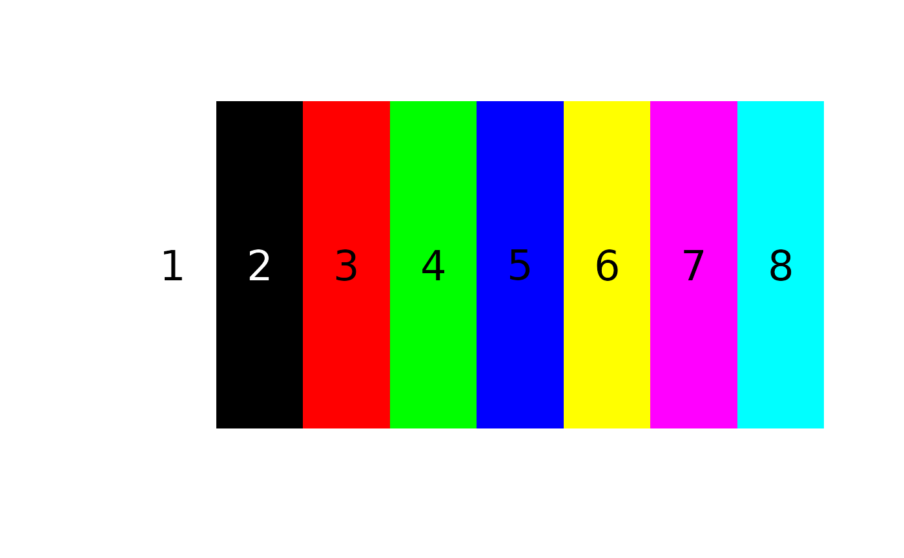
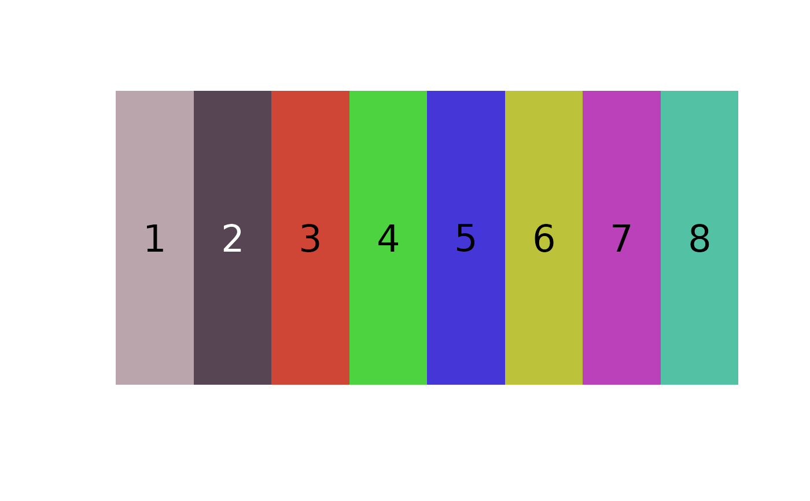

Assign a 2D matrix of pixels to specified colors
assignPixels.RdAssign a 2D matrix of pixels to specified colors
assignPixels(
centers,
pixel_matrix,
color_space = "Lab",
ref_white = "D65",
adjust_centers = TRUE
)Arguments
- centers
Matrix of color centers (rows = colors, columns = channels).
- pixel_matrix
Matrix of pixel colors (rows = pixels, columns = channels).
- color_space
Color space in which to minimize distances, passed to
grDevices{convertColor}. One of "sRGB", "Lab", "Luv", or "XYZ". Default is "Lab", a perceptually uniform (for humans) color space.- ref_white
Reference white for converting to different color spaces. D65 (the default) corresponds to standard daylight.
- adjust_centers
Logical. Should the returned color clusters be the average value of the pixels assigned to that cluster? See details.
Value
A list of class color_clusters, containing:
pixel_assignments: The color center assignment for each pixel.centers: A matrix of color centers. Ifadjust_centers = FALSE, this will be identical to the input ofcenters.sizes: The number of pixels assigned to each cluster.
Details
This is a largely internal function called by imposeColors
for recoloring an image based on extrinsic colors. If adjust_centers = TRUE,
then after assigning pixels to given color centers, the location of each color center
is replaced by the average color of all the pixels assigned to that center.
Examples
# RGB extremes (white, black, red, green, blue, yellow, magenta, cyan)
ctrs <- matrix(c(1, 1, 1,
0, 0, 0,
1, 0, 0,
0, 1, 0,
0, 0, 1,
1, 1, 0,
1, 0, 1,
0, 1, 1), byrow = TRUE, ncol = 3)
# plot it
recolorize::plotColorPalette(ctrs)

# create a pixel matrix of random colors
pixel_matrix <- matrix(runif(3000), ncol = 3)
# assign pixels
reassigned <- recolorize::assignPixels(ctrs, pixel_matrix, adjust_centers = TRUE)
recolorize::plotColorPalette(reassigned$centers)

# if we turn off adjust_centers, the colors remain the same as the inputs:
keep.centers <- recolorize::assignPixels(ctrs, pixel_matrix, adjust_centers = FALSE)
recolorize::plotColorPalette(keep.centers$centers)